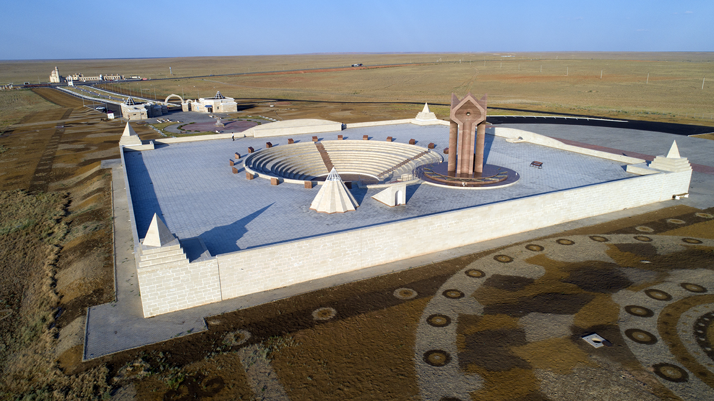
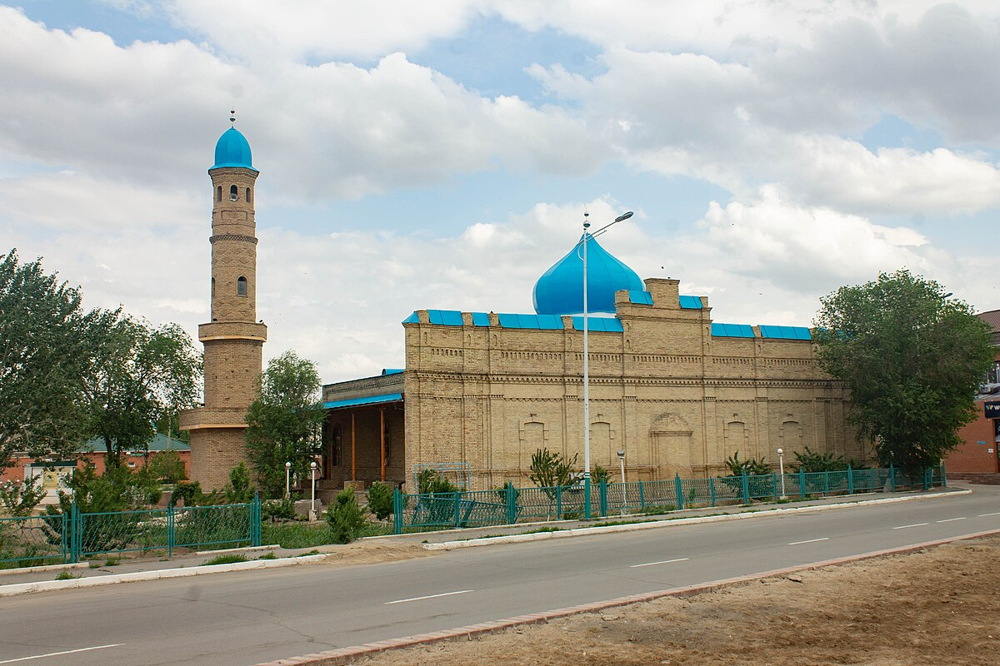
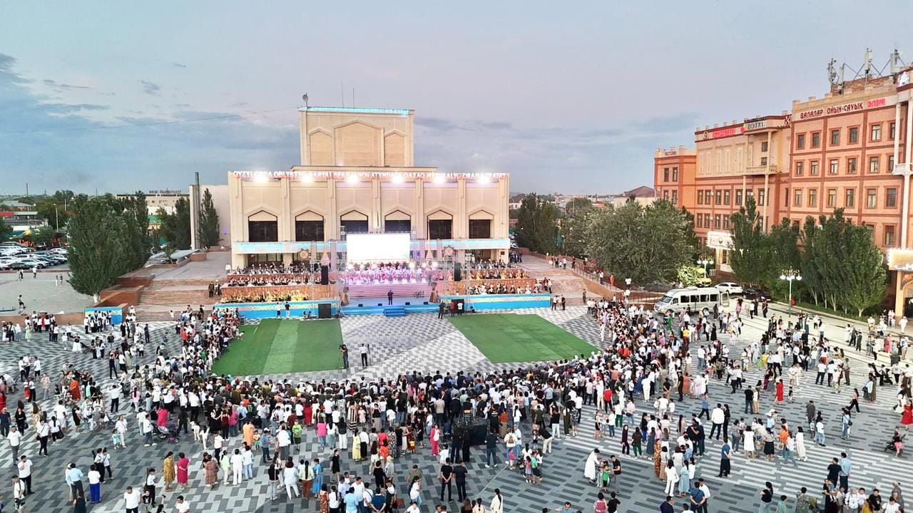
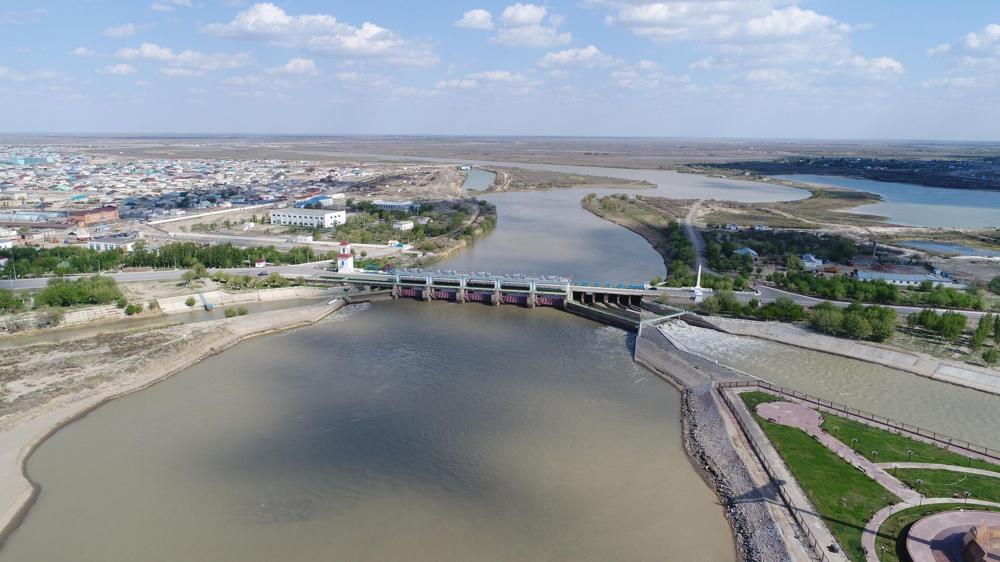
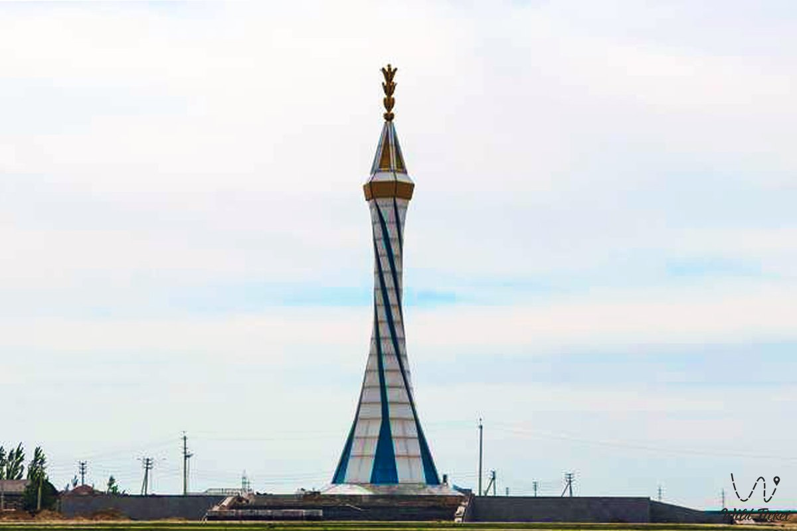

Кызылорда
Кызылорда – город на юге Казахстана, являющийся административным центром одноименной Кызылординской области. Город расположен на правом берегу крупнейшей среднеазиатской реки Сырдарья. В переводе с казахского языка «Кызылорда» означает «Красная столица». Географически город находится в зоне Приаралья и является важным транспортным узлом, связывающим юг и центр страны.
Население: около 280 тысяч человек.
Основан: В 1820 году как крепость Ак-Мечеть.
История
Кызылорда имеет богатую и сложную историю. Она была основана Кокандским ханством как крепость Ак-Мечеть (Белая мечеть) в 1820 году. Крепость имела важное стратегическое значение, так как контролировала торговые пути. После завоевания Российской империей была переименована в Перовск. С 1925 по 1929 год город был столицей Казахской АССР в составе СССР, и именно тогда получил свое современное название Кызылорда («Красная столица»). Город сыграл ключевую роль в освоении региона, особенно в период строительства Туркестано-Сибирской железной дороги (Турксиб), которая прошла через него.
Достопримечательности
-

Музей Коркыт-Ата: Посвящен легендарному тюркскому акыну и музыканту Коркыт-Ата, символу духовного наследия региона.
-

Мавзолей Айтбай-ата: Один из самых значимых архитектурных и духовных памятников города.
-

Центральная площадь: Место сбора горожан, где расположены административные здания и памятники.
-

Река Сырдарья: Главная водная артерия региона. Набережная реки является популярным местом для отдыха.
-

Монумент «Сыр анасы» (Мать Сырдарьи): Символизирует реку как источник жизни для региона.
Культура
Культура Кызылорды тесно связана с ее степной историей и близостью к воде (река Сырдарья). Регион является родиной многих известных деятелей культуры, включая легендарного Коркыт-Ата. Местные традиции отражают глубокое уважение к истории, традициям и земледельческому труду.
Интересные факты
- Кызылорда была столицей Казахстана, хоть и недолго, с 1925 по 1929 год.
- Город является важным транспортным узлом на пути, ведущем к космодрому Байконур.
- Регион известен выращиванием риса.
- В окрестностях Кызылорды находятся древние городища Жанкент и Сыганак, которые являются важными археологическими памятниками Великого Шелкового пути.